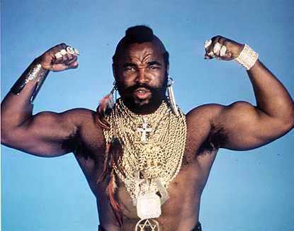

 Mr. T (born Laurence Tureaud; May 21, 1952) is an American actor known for his roles as B. A. Baracus in the 1980s television series The A-Team, as boxer Clubber Lang in the 1982 film Rocky III, and for his appearances as a professional wrestler. Mr. T is also well-known for his distinctive mohawk hairstyle, for wearing large amounts of gold jewelry, and for his tough guy image. He starred in the reality show I Pity the Fool, shown on TV Land, the title of which comes from his Rocky III catchphrase.
Mr. T was born Laurence Tureaud in Chicago, Illinois, the youngest boy in a family with twelve children. His father, Nathaniel Tureaud Sr., was a minister.[1] Tureaud, with his four sisters and seven brothers, grew up in one of the city's housing projects, Robert Taylor Homes.
Tureaud attended Paul Lawrence Dunbar Vocational Career Academy, where he played football, wrestled, and studied martial arts. He won a scholarship to Prairie View A&M University, but was thrown out after a year. Tureaud also attended several small Chicago area colleges on athletic scholarships. After leaving school, Tureaud became a military policeman in the U.S. Army, before trying out for the NFL football team Green Bay Packers.
Tureaud worked as a bouncer after he returned from the army. It was at this time that he created the persona of "Mr. T." His wearing of gold neck chains and other jewelry was the result of customers losing the items, leaving them behind at the bar/night club after a fight, or being removed from the place. A customer would not have to re-enter or even have to see anyone else again if Mr. T wore their jewelry as he stood out front. When a customer came back, their item was readily visible and available with no further confrontations required. Often, the "former" customers did not return. Mr. T thus built up a large collection and earned a reputation for wearing many gold neck chains and bracelets.
Mr. T managed eventually to parlay his job as a bouncer into a career as a bodyguard to the stars that lasted almost ten years. He protected well-known personalities like Muhammad Ali, Steve McQueen, Michael Jackson, Leon Spinks, Joe Frazier and Diana Ross, charging $3,000 per day.[2]
As a bodyguard, Tureaud's business card read, "Next to God, there is no greater protector than I." Mr. T claimed that he never lost a client, saying, "I got hurt worse growing up in the ghetto than working as a bodyguard." A bald-headed Mr. T can be seen on film accompanying Joe Frazier to the ring in Frazier's rematch against George Foreman in 1976.
Mr T. Starred in Rocky III with Sylvester Stylone.